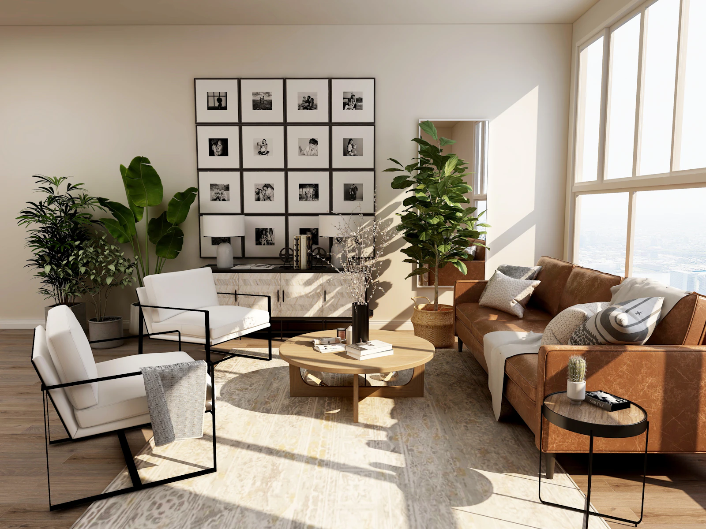
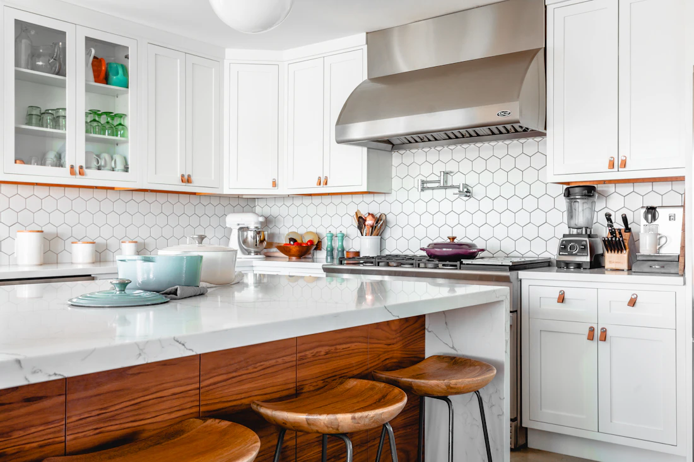

Remodelação de interiores
Repensar a organização e a utilização dos espaços, com atenção ao conforto e à forma de habitar.
Remodelações · Braga e Porto
Remodelações em Braga e Porto, pensadas para dar uma nova vida aos espaços.

O potencial de um espaço
Uma casa muda quando passa a fazer mais sentido para quem a habita. Na forma como a luz entra, na escolha de um material ou na relação entre as divisões.
O ponto de partida é compreender as necessidades, as rotinas e o que se imagina para o futuro. Porque transformar um ambiente começa por olhar para ele de outra forma.
Áreas de intervenção
Diferentes formas de transformar
o espaço à sua volta.

Repensar a organização e a utilização dos espaços, com atenção ao conforto e à forma de habitar.
Explorar novas possibilidades para ambientes onde a funcionalidade e os materiais fazem a diferença.
Pavimentos, texturas e superfícies que ajudam a dar coerência e personalidade ao conjunto.
Áreas de intervenção a confirmar com o responsável.
Um olhar sobre os espaços
Uma seleção de referências visuais.
O início de uma possível transformação.
Referência ilustrativa — não representa uma obra da marca.
Referência ilustrativa — não representa uma obra da marca.
Referência ilustrativa — não representa uma obra da marca.
Imagens de inspiração, não um portefólio de trabalhos realizados. Selecione uma imagem para ampliar.
A diferença está no detalhe
A luz que revela uma textura. A madeira que aquece um ambiente. Um revestimento que liga os espaços.
Materiais e utilização pensados em conjunto abrem caminho a ambientes mais coerentes, confortáveis e pessoais.
Do primeiro olhar ao planeamento
Uma proposta de processo,
sujeita a validação pelo responsável.
Dar a conhecer o espaço, o que gostaria de mudar e as referências que o inspiram.
Compreender a utilização do espaço e os aspetos a considerar numa possível intervenção.
Clarificar as prioridades, os materiais e o âmbito a discutir com o responsável.
Organizar as etapas e as condições a acordar antes de avançar com qualquer trabalho.
Antes de começar
Uma descrição do espaço, a localidade, as alterações pretendidas e, se disponíveis, medidas e fotografias podem ajudar a contextualizar o pedido. Os elementos necessários deverão ser confirmados com o responsável.
As referências visuais podem ajudar a explicar preferências de materiais, ambientes e acabamentos. Servem como ponto de partida para uma conversa, não como compromisso de execução.
O âmbito deverá resultar da análise das necessidades e das condições do espaço, e ser acordado diretamente com o responsável. Esta demonstração não constitui uma proposta comercial.
Não. Esta é uma proposta visual independente, preparada para apresentação ao responsável pela marca.
Vamos imaginar o próximo passo
Cada transformação começa com uma ideia.
Experimente partilhar a sua nesta demonstração.
Os contactos e os canais oficiais poderão ser adicionados após validação pelo responsável.
Formulário de demonstração.
Não introduza dados pessoais reais.